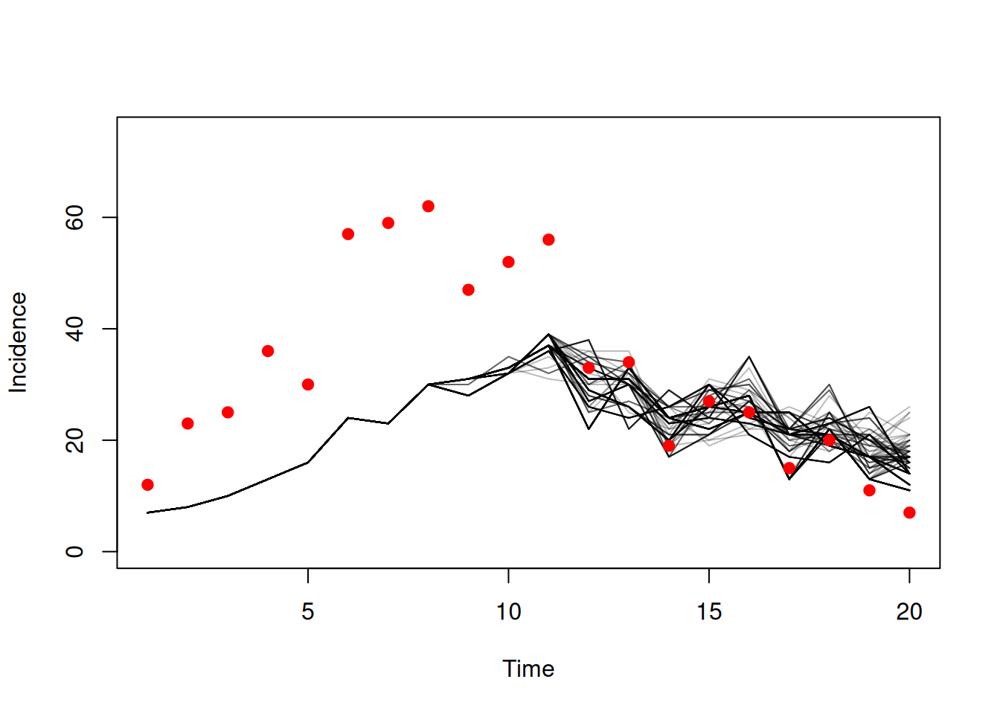
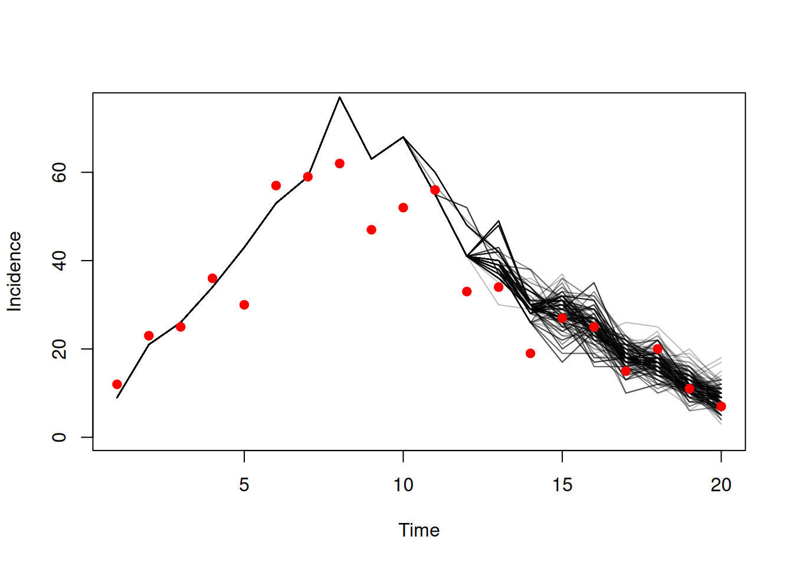

library(odin2)
library(dust2)7 Data
Before we start on inference, we need to start thinking about how our models fit to data, and how we can get data into the models. This gets very close to the interface that we need to work with monty, which is the focus of the next section of the book.
7.1 The SIR model revisited
In a couple of chapters we’ll explore fitting a stochastic SIR model to data, so we’ll start with expressions from the model in Section 3.2
sir <- odin({
update(S) <- S - n_SI
update(I) <- I + n_SI - n_IR
update(R) <- R + n_IR
update(incidence) <- incidence + n_SI
p_SI <- 1 - exp(-beta * I / N * dt)
p_IR <- 1 - exp(-gamma * dt)
n_SI <- Binomial(S, p_SI)
n_IR <- Binomial(I, p_IR)
initial(S) <- N - I0
initial(I) <- I0
initial(R) <- 0
initial(incidence, zero_every = 1) <- 0
N <- parameter(1000)
I0 <- parameter(10)
beta <- parameter(0.2)
gamma <- parameter(0.1)
})Assuming our time unit is one day, if we run our model in time steps of a quarter of a day, then plotting incidence at daily time intervals we get:
pars <- list(beta = 1, gamma = 0.6)
sys <- dust_system_create(sir, pars, dt = 0.25)
dust_system_set_state_initial(sys)
t <- seq(0, 20)
y <- dust_system_simulate(sys, t)
y <- dust_unpack_state(sys, y)
plot(t, y$incidence, type = "p", xlab = "Time", ylab = "Incidence")7.2 The data cometh
We need a data set to fit to; we’ll use the data set data/incidence.csv, which you can download.
d <- read.csv("data/incidence.csv")
head(d)
#> time cases
#> 1 1 12
#> 2 2 23
#> 3 3 25
#> 4 4 36
#> 5 5 30
#> 6 6 57
tail(d)
#> time cases
#> 15 15 27
#> 16 16 25
#> 17 17 15
#> 18 18 20
#> 19 19 11
#> 20 20 7We have a column for time time and one for observed cases cases spanning the time range 0 to 20.
7.3 Comparison to data
The next step is to tell our model about this data:
sir <- odin({
update(S) <- S - n_SI
update(I) <- I + n_SI - n_IR
update(R) <- R + n_IR
update(incidence) <- incidence + n_SI
p_SI <- 1 - exp(-beta * I / N * dt)
p_IR <- 1 - exp(-gamma * dt)
n_SI <- Binomial(S, p_SI)
n_IR <- Binomial(I, p_IR)
initial(S) <- N - I0
initial(I) <- I0
initial(R) <- 0
initial(incidence, zero_every = 1) <- 0
N <- parameter(1000)
I0 <- parameter(10)
beta <- parameter(0.2)
gamma <- parameter(0.1)
cases <- data()
cases ~ Poisson(incidence)
})The last two lines here are doing the work for us:
First, cases <- data() says that cases is a special data variable. It will vary over time (there are different observations of cases at different times) and it will come from the data rather than from the model dynamics.
Second, cases ~ Poisson(incidence) describes the per-data-point likelihood calculation; the syntax may be familiar to you if you have read Richard McElreath’s Statistical Rethinking or used any number of Bayesian statistical frameworks.
Note
A data variable cannot have the same name as a state variable - in situations where one directly corresponds to the other you may have to think carefully about naming to distinguish between the two in a way that you can remember which refers to which.
The generator will advertise that this system can be compared to data:
sir
#>
#> ── <dust_system_generator: odin_system> ────────────────────────────────────────
#> ℹ This system has 'compare_data' support
#> ℹ This system runs in discrete time with a default dt of 1
#> ℹ This system has 4 parameters
#> → 'N', 'I0', 'beta', and 'gamma'
#> ℹ Use dust2::dust_system_create() (`?dust2::dust_system_create()`) to create a system with this generator
#> ℹ Use coef() (`?stats::coef()`) to get more information on parametersOnce we have our new model, we can see how the data comparison works.
sys <- dust_system_create(sir, list(), n_particles = 10)
dust_system_set_state_initial(sys)
dust_system_run_to_time(sys, d$time[[1]])
dust_system_compare_data(sys, d[1, ])
#> [1] -13.669448 -7.351682 -20.987214 -9.803867 -13.669448 -5.673960
#> [7] -9.803867 -13.669448 -9.803867 -20.987214This has run the model to the point where we have the first observed data (time 1), this time without returning any data to R, then we have used dust_system_compare_data with the first row of data. This returns a vector of 10 likelihoods – one per particle.
Note
This is probably the first mention of a “particle”, and it is from this that the name dust is derived. As a nod to the particle filter, which will be the focus of the next section, we refer to each realisation of the dynamical system as a “particle”.
To demystify this a little we can perform this calculation manually. First we extract the state from the system, unpacking it to make it easier to work with:
s <- dust_unpack_state(sys, dust_system_state(sys))
s
#> $S
#> [1] 988 986 989 987 988 985 987 988 987 989
#>
#> $I
#> [1] 10 13 8 12 12 15 13 12 12 9
#>
#> $R
#> [1] 2 1 3 1 0 0 0 0 1 2
#>
#> $incidence
#> [1] 2 4 1 3 2 5 3 2 3 1We can then manually compute the likelihood, and bind this together with the calculation from dust to compare:
cbind(dpois(d$cases[[1]], s$incidence, log = TRUE),
dust_system_compare_data(sys, d[1, ]))
#> [,1] [,2]
#> [1,] -13.669448 -13.669448
#> [2,] -7.351682 -7.351682
#> [3,] -20.987214 -20.987214
#> [4,] -9.803867 -9.803867
#> [5,] -13.669448 -13.669448
#> [6,] -5.673960 -5.673960
#> [7,] -9.803867 -9.803867
#> [8,] -13.669448 -13.669448
#> [9,] -9.803867 -9.803867
#> [10,] -20.987214 -20.987214As you can see, these are the same; the expression
cases ~ Poisson(incidence)has done the same sort of thing as we can do ourselves by asking “what is the (log) probability of observing cases cases if the underlying rate of incidence is incidence”. Note that this can be -Inf (a probability of 0) in the case where the modelled incidence is zero.
dpois(10, 0, log = TRUE)
#> [1] -InfThis is fine, so long as not all particles are impossible.
7.4 The particle filter
We include a simple bootstrap particle filter in dust for estimating the marginal likelihood in this case; the probability of the entire data series conditional on our model, marginalised (averaged) over all stochastic realisations. Because our model is stochastic, this is an estimate of the likelihood but the estimate will get less noisy as the number of particles increases.
filter <- dust_filter_create(sir, time_start = 0, data = d, n_particles = 200)Here, we’ve created a filter where the time series starts at 0, using our data set d and we’ve picked 200 particles to start with. We run the filter with dust_likelihood_run, and this returns a likelihood:
dust_likelihood_run(filter, list())
#> [1] -230.2398
Note
A value of NA in the data time series for a given datastream at a given timepoint will indicate missing data and the filter will simply ignore that datastream at that timepoint.
Each time we run the filter, we’ll get a different answer though.
dust_likelihood_run(filter, list())
#> [1] -209.737For example, running for 100 times:
ll <- replicate(100, dust_likelihood_run(filter, list()))
mean(ll)
#> [1] -221.6029
var(ll)
#> [1] 209.5122If we increase the number of particles, this variance will decrease, at the cost of taking longer to run:
filter2 <- dust_filter_create(sir, time_start = 0, data = d,
n_particles = 2000)
ll2 <- replicate(100, dust_likelihood_run(filter2, list()))
mean(ll2)
#> [1] -187.2385
var(ll2)
#> [1] 60.33101The log-likelihoods from different numbers of particles are not directly comparable, though.
You can extract trajectories from the filter after running it: this gives a tree showing the ancestry of the particles remaining in the sample. To enable this, you must run with save_trajectories = TRUE, as this incurs a runtime cost.
ll <- dust_likelihood_run(filter, list(), save_trajectories = TRUE)
h <- dust_likelihood_last_trajectories(filter)The trajectories will be an array with 3 dimensions representing (in turn) state, particle and time:
dim(h)
#> [1] 4 200 20
Note
Trajectories will only be saved at the timepoints found in the data time series. If you want to output trajectories at timepoints where you do not have any data, you can do this by including the timepoints in the data time series with NA values in all of the datastreams. Doing so will have no impact on the filtering process. This can be useful if e.g. you want to output the trajectories between time_start and your first data timepoint; or you have weekly data but you want to output daily trajectories.
We can plot the trajectories of our incidence here:
matplot(d$time, t(dust_unpack_state(filter, h)$incidence), type = "l",
lty = 1, col = "#00000044", ylim = c(0, 75),
xlab = "Time", ylab = "Incidence")
points(cases ~ time, d, pch = 19, col = "red")
This model does not fit the data very well! The points don’t lie close to the modelled trajectories. We also see everything before time ~10 reduced to a single particle’s trajectories, which will have the effect of increasing the variance.
If we found better parameters things would look much better. We just so happen to know that if beta is 1 and gamma 0.6 then the model will fit better:
pars <- list(beta = 1, gamma = 0.6)
ll <- dust_likelihood_run(filter, pars, save_trajectories = TRUE)
h <- dust_likelihood_last_trajectories(filter)
matplot(d$time, t(dust_unpack_state(filter, h)$incidence), type = "l",
lty = 1, col = "#00000044", ylim = c(0, 75),
xlab = "Time", ylab = "Incidence")
points(cases ~ time, d, pch = 19, col = "red")
As the model fit improves and the log-likelihood increases, the variance in that estimator will also decrease as the model struggles less to describe the data:
ll <- replicate(100, dust_likelihood_run(filter, pars))
mean(ll)
#> [1] -80.61978
var(ll)
#> [1] 1.982596Moving from the poor-fitting parameters to the better fitting ones is the process of inference, which will be the focus of most of the rest of this book.